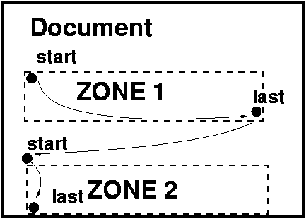

jsesh.mdcDisplayer.layout.Zone
jsesh.mdcDisplayer.layout.Zone
|
|||||||||||
| PREV CLASS NEXT CLASS | FRAMES NO FRAMES | ||||||||||
| SUMMARY: NESTED | FIELD | CONSTR | METHOD | DETAIL: FIELD | CONSTR | METHOD | ||||||||||
java.lang.Object
RE-WRITE this text. A simple text area (line, column...). Zones are places where views will be added. In fact, they are used to keep track of a line or a column's size. A limitation of zones is that when absolute positioning is used in a zone, there are constraints : there should not be a point relative to the west side and a point relative to the east, nor a point relative to the north and another to the south. However, it's possible to have a point relative to the north and another to the east.
Zones work as "macro"-MDCviews. That is, a zone has a start point (which will be used to place it), and a last point, which is always relative to the start point. Note that the "Next point" is always a simple relative translation.
NOTE ON NEXT LINES : the idea of end point is nice, but it doesn't work well when a relative position is "rooted" and a last point. Normally, the starting point is modified by the user when the zone is completed. The last point encodes a position relative to the start point. It's normally a simple translation. It allows to compute where we will be after the zone is finished.

| Constructor Summary | |
Zone(double minWidth,
double minHeight)
build a new zone. |
|
| Method Summary | |
void |
add(MDCView view)
Add a view's bounding box to the current zone. |
java.awt.geom.Point2D |
getCurrentPoint()
|
double |
getHeight()
|
double |
getMaxX()
|
double |
getMinX()
|
double |
getMinY()
|
double |
getWidth()
|
boolean |
isEmpty()
|
void |
moveCurrentPoint(double dx,
double dy)
|
void |
translateBy(java.awt.geom.Point2D zoneStart)
|
| Methods inherited from class java.lang.Object |
equals, getClass, hashCode, notify, notifyAll, toString, wait, wait, wait |
| Constructor Detail |
public Zone(double minWidth,
double minHeight)
minWidth - minHeight - | Method Detail |
public void add(MDCView view)
view - : the view to add.public double getWidth()
public double getHeight()
public boolean isEmpty()
public double getMinY()
public double getMinX()
public double getMaxX()
public java.awt.geom.Point2D getCurrentPoint()
public void moveCurrentPoint(double dx,
double dy)
dx - dy - public void translateBy(java.awt.geom.Point2D zoneStart)
zoneStart -
|
|||||||||||
| PREV CLASS NEXT CLASS | FRAMES NO FRAMES | ||||||||||
| SUMMARY: NESTED | FIELD | CONSTR | METHOD | DETAIL: FIELD | CONSTR | METHOD | ||||||||||